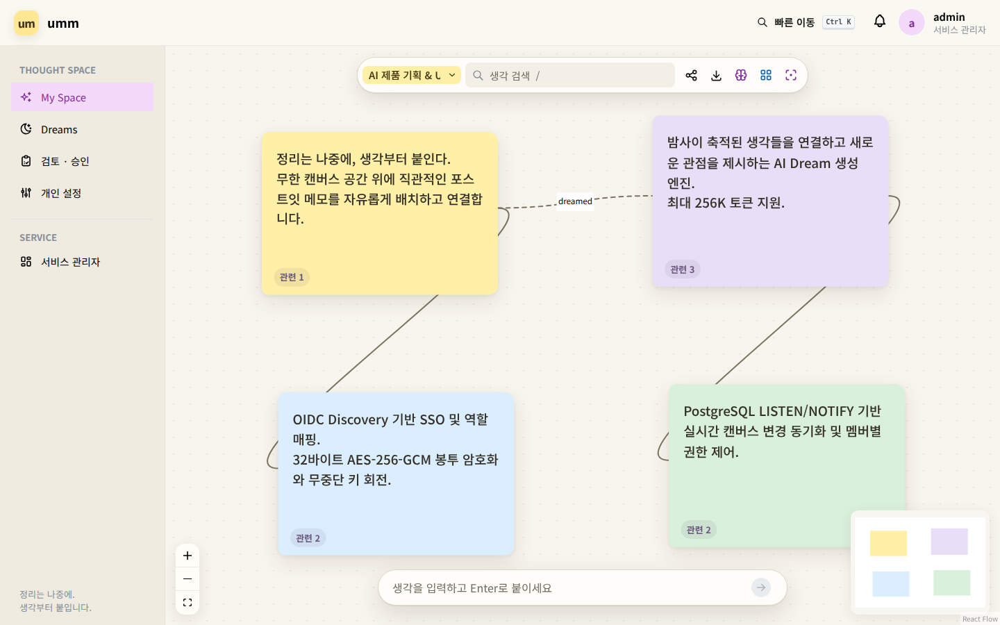
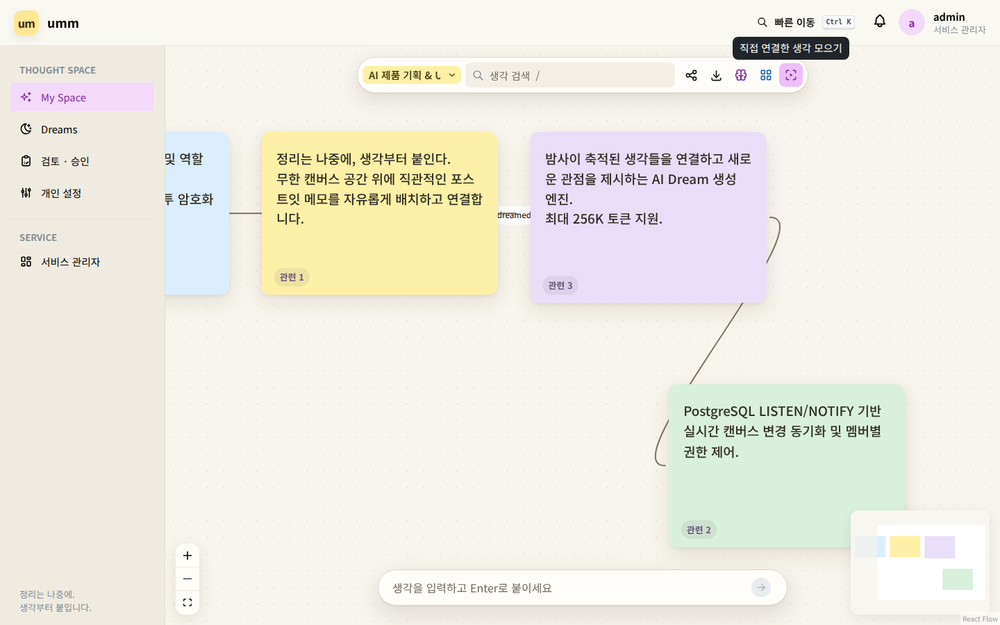
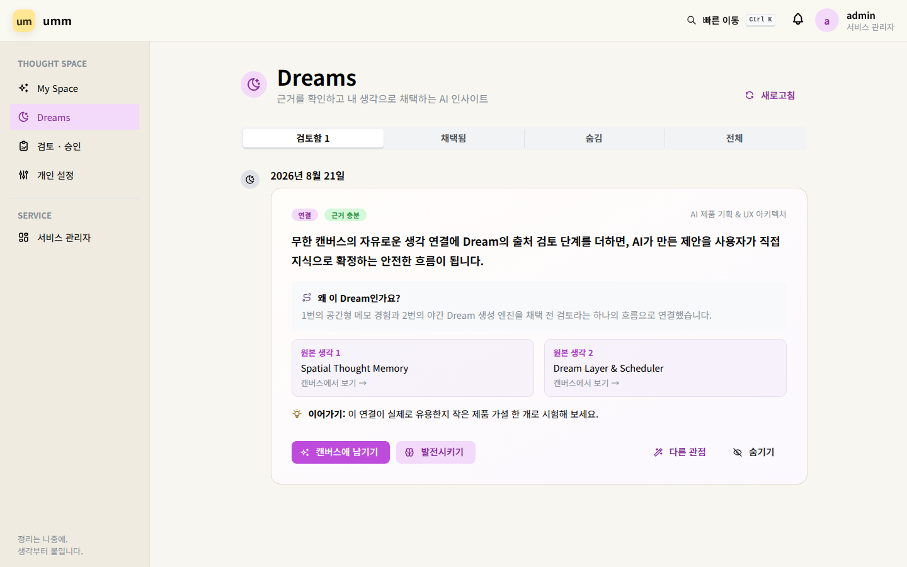
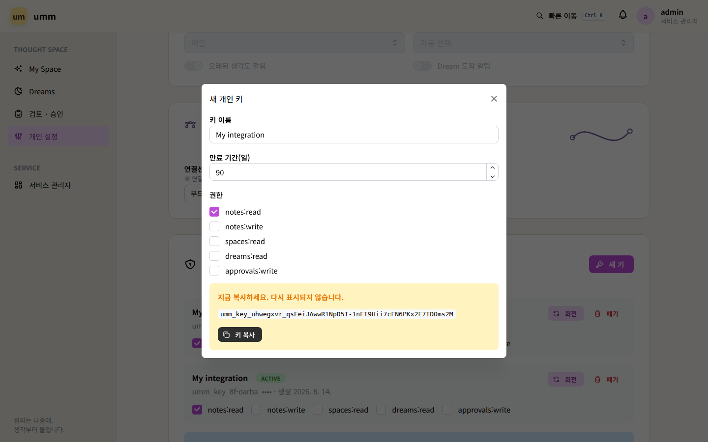
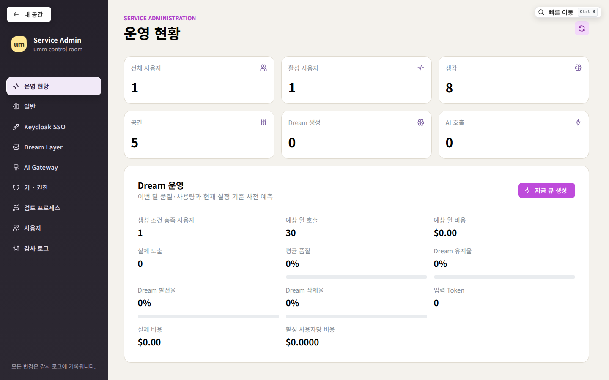
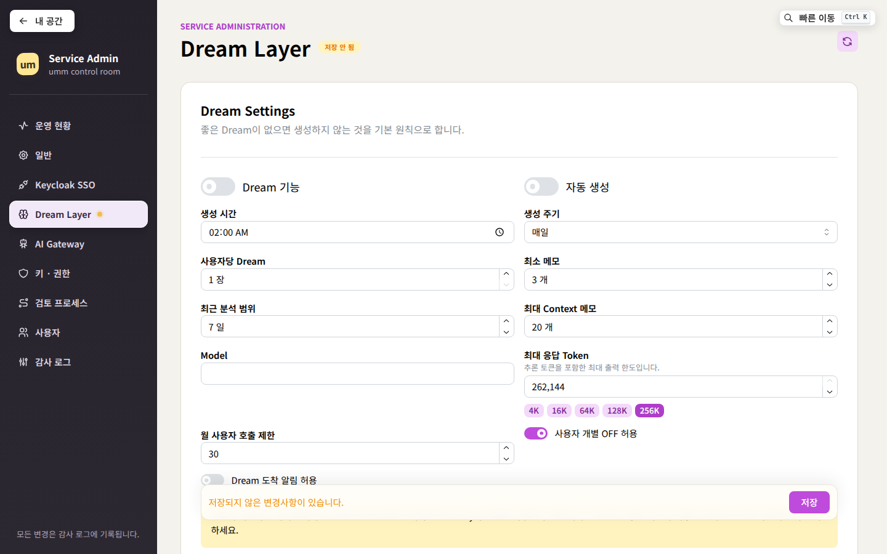

umm은 생각을 문서나 폴더로 정리하기 전에 무한 캔버스 위에 자유롭게 붙이고, 연결하고,
밤사이 Dream으로 다시 발견하는 엔터프라이즈 사내망용 지식 메모 플랫폼입니다.

직관적인 공간 캔버스부터 밤사이 자라나는 Dream, 엔터프라이즈 보안까지 모든 기능을 확인하세요.
문서나 폴더 구조의 제약 없이 2차원 공간 위에 자유롭게 생각을 배치하고 연결합니다. 저장 버튼 없이 모든 변경사항이 실시간 커밋됩니다.
N, /, 하단 Quick Capture 바 지원노랑, 파랑, 보라, 라벤더, 초록, 빨강, 회색의 은은한 종이 질감 색상으로 생각의 맥락을 분류하고 자유롭게 크기를 조절합니다.
Cmd+Z / Shift+Cmd+Z 위치 이동 Undo/Redo 지원
원하는 생각을 선택하고 Gravity를 발동하면 연결된 생각들이 중심 노드 주위로 아름다운 원형 궤도를 그리며 정렬됩니다.

사용자가 쉬는 동안 축적된 메모들을 분석하여 새로운 연결과 영감을 주는 질문을 담은 Dream 카드를 생성합니다.

필요한 권한 스코프만 최소로 부여하고, 설정된 중첩 시간(예: 24시간) 동안 구/신규 키를 동시 지원하는 무중단 키 회전을 제공합니다.
POST /mcp) 에이전트 도구 완벽 지원
전체 사용자, 활성 생각 수, 공간 수, AI 호출량, 예상 월 비용($) 및 Dream 유지율/발전율 지표를 한눈에 파악합니다.

초거대 Context Window 모델을 위한 256K 토큰 슬라이더와 모든 관리자 행위를 위변조 없이 영구 기록하는 감사 추적 체계를 갖추었습니다.
외부 통신 없이 단일 Docker 컨테이너와 PostgreSQL만으로 영구 지속되는 안정성을 보장합니다.
192차원 문자 n-gram feature hashing과 cosine similarity를 DB 내부에서 고속 연산하여 외부 임베딩 API 없이도 연관 생각을 완벽히 추천합니다.
모든 노드의 단조 증가 version 번호로 충돌을 방지하며, PostgreSQL LISTEN/NOTIFY 기반 SSE 이벤트로 모든 참여자에게 실시간 반영됩니다.
외부 메시지 브로커 없이 PostgreSQL FOR UPDATE SKIP LOCKED를 활용해 다중 워커 간 중복 없이 안전하게 야간 추론 작업을 수행합니다.
오프라인 환경에서도 단 한 줄의 명령어로 즉시 기동할 수 있습니다.